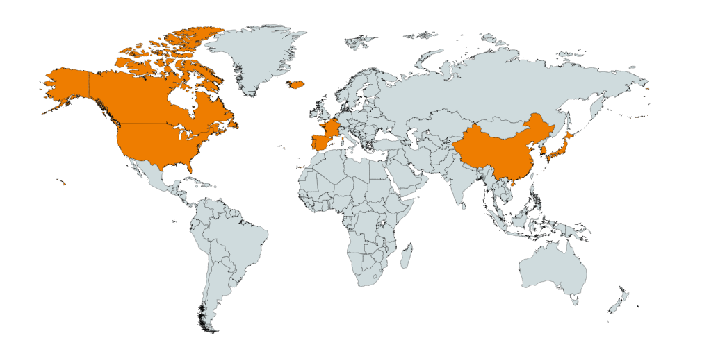

Home is where the cat is!
I was born and raised in New York City before moving to central NY for college. Since college I've spent some time in Wisconsin and Texas. Home is currently Austin, TX; though I spend most of my time studying and suriving in Seattle. I, like just about everyone else you know, aspire to travel. Read on to find out more about my experiences in Ipsum Lorem!